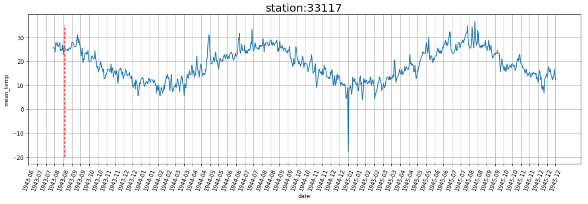
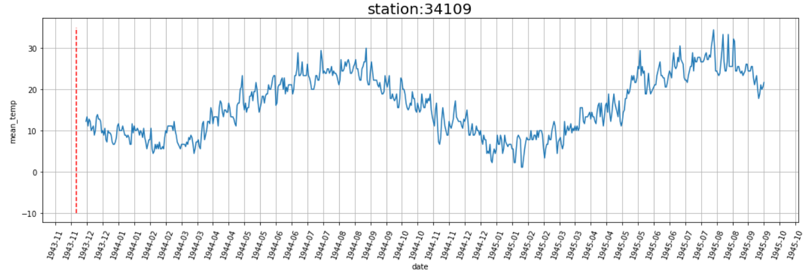
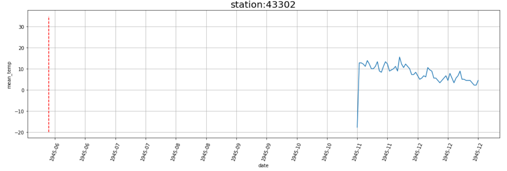
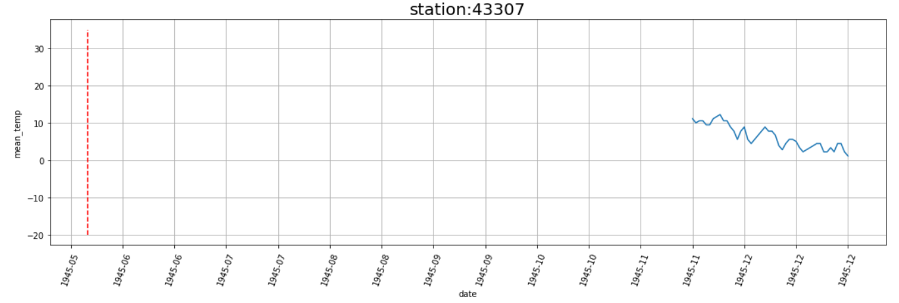

二戰介紹
二次世界大戰，是1939年到1945年爆發的全球性世界衝突，整場戰爭幾乎涉及到世界上絕大多數的國家，以及所有的大國，這次可以說是歷史上規模最大的戰爭，也是歷史上死傷最慘重的戰爭。保守估計，至少有1億人參與二次世界大戰，大約有5000萬到7000萬人死亡。
這是一個什麼樣的概念？就是台灣全部的人民死了一次都還不夠，要死2.5次才有辦法等於二戰期間的總共死亡人數。
那麼二戰其實也是一個總體戰的範疇，總體戰是什麼？它指的就是全面戰爭，意思就是一個國家動員所有能運用的資源，摧毀另一個國家參與戰爭以及發動軍事衝突的能力。TOP
義大利
觀察所有義大利測站的溫度分佈可以看出雖然觀測時間區間不一致，但是都呈現一個規律：有週期性的變化。
其中，以紅線標注的時間位置有發生戰爭事件，但在資料中只占一小部分或是觀測資料中沒有出現，可以解讀為在義大利的測站中，戰爭與氣候的關聯性不大。TOP

此測站位於巴勒摩，其為西西里島上的一座城市，盟軍在1943年7月攻陷此城。

此測站位於巴里，其於1943年12月2日被德軍轟炸，造成了盟軍其中一艘載有毒氣的船也被炸開，導致毒氣外洩。
日本
從日本的幾個測站資料來看，雖然資料不多，但還是能從些微的資料看出，以平均溫度的圖表來看會有逐漸下降的趨勢，中間不乏有一些缺失的資料。
以紅線標註的時間為當時戰爭的期間，但是測站資料大部分只有在這個時間過後才有資料，因此我們推測部分的原因是跟當時的戰爭有關，詳細原因應該探究測站的設置方式方能了解真正形成這些圖表的方式。TOP

此測站位於大阪，其於1945年2月開始被美軍轟炸，到了6月轟炸的次數開始增加。

此測站所在城市位於東京附近，考慮到東京被美軍重點轟炸，所以有可能遭受波及，從1944年11月14日開始被轟炸。
結論
一開始我們本來預期可以利用網路上一些二戰戰爭事件的資料與kaggle上資料集測站的位置對應，觀察戰爭與天氣的關聯性。
實際觀察資料的分佈以及網路上的資源，還有我們主要觀察的地區，可以發現很多地方很難去判斷說戰爭影響的程度很多，但從圖表呈現的樣子可以看到：溫度是呈現一個周期性的變化，以及異常值出現的頻率不低等等。TOP